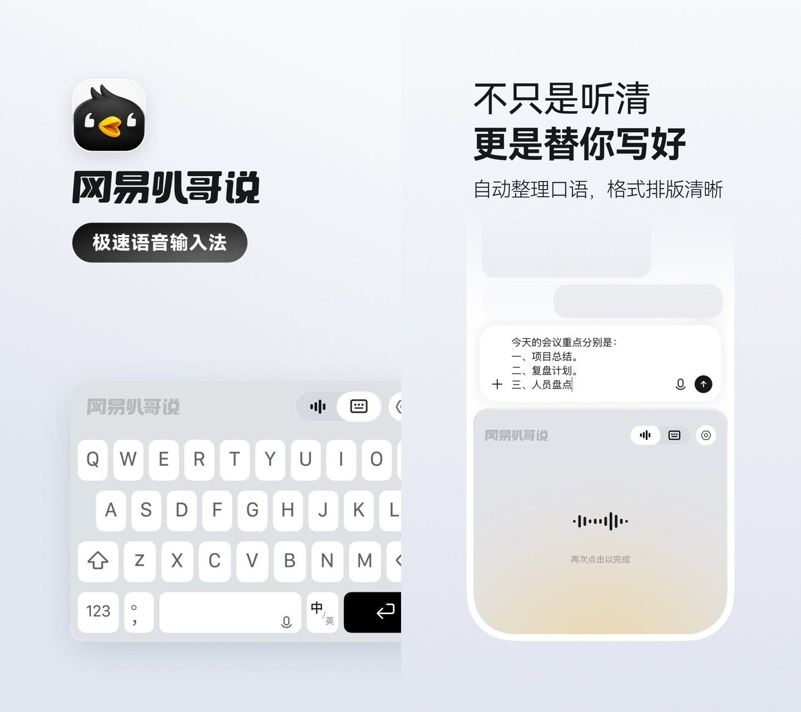

新闻 · 2026-11-25 12:00
网易 AI 语音输入法“叭哥说”移动版上线：主打口语整理，承诺终身免费无广告
网易于2026年9月8日推出AI语音输入法“叭哥说”，原为桌面端产品，2026年11月13日上线iOS版1.0.1，11月24日安卓版1.1.0，主打口语整理、支持100+语言互译、承诺终身免费无广告，效率标称键盘打字5倍，支持语音悬浮球、智能标点等功能。

来源与核验
单一信源报道，未交叉核实
网易于2026年9月8日推出AI语音输入法“叭哥说”，原为桌面端产品，2026年11月13日上线iOS版1.0.1，11月24日安卓版1.1.0，主打口语整理、支持100+语言互译、承诺终身免费无广告，效率标称键盘打字5倍，支持语音悬浮球、智能标点等功能。

单一信源报道，未交叉核实